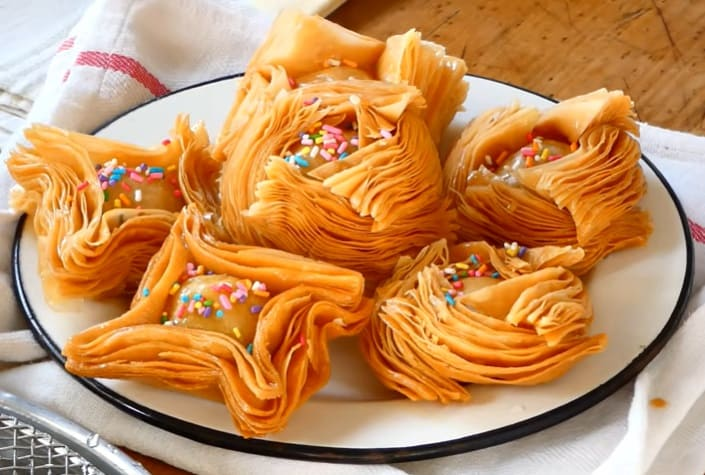

Receta de Pastelitos
¡Pastelitos calientes que queman los dientes!
Nuestros típicos pastelitos criollos están hechos con una masa bien crocante y hojaldrada, rellenos por lo general, por dulce de membrillo, dulce de leche o dulce de batata. ¿Nuestro preferido? Membrillo, OBVIAMENTE.

Ingredientes
Para la masa
- 400 gramos de harina
- 100 gramos de Maizena
- 100 gramos de grasa vacuna
- 280 cc de agua
- 500 cc de aceite
- sal a gusto
Para el empaste
- 100 gramos de harina
- 100 gramos de Maizena
- 100 gramos de grasa vacuna
Para el relleno
- 250 gramos de dulce de membrillo
- 100 ml de agua
- 150 gramos de azúcar
Procedimiento
Para la masa
- Empezá por mezclar en un bol la harina junto a la Maizena. En el centro colocá la grasa, el agua y la sal. Amasá bien hasta lograr una masa uniforme.
- Tapalo y déjalo reposar por al menos 30 minutos o hasta que duplique su tamaño.
Para el empaste
- Mientras derretís la grasa, estirá sobre la mesada de la cocina la masa que dejaste reposar.
- Luego pintala con la grasa fundida, espolvoreale la harina junto con la Maizena y dobla la masa por a la mitad.
- Refrigerala por 10 minutos y repetí el paso anterior 3 veces más. Esto es para lograr que la masa se hojaldre y quede TREMENDA.
- Estirá la masa finamente y cortala en cuadraditos de entre 6 y 8 centímetros de lado.
- Ahora agarrá un cuadradito de masa y colocale un poquito de dulce de membrillo en el centro.
- Tapalo con otro cuadradito de masa en forma de cruz y presioná las cuatro puntas para sellarlo bien.
Cocción
- Para esta parte vas a necesitar 2 ollas con aceite. Una a fuego bajo y otra a fuego alto.
- La idea es comenzar a freír el pastelito a fuego bajo para que la masa hojaldre. Una vez que esté bien bien hojaldrada, vas a pasarla al aceite caliente para que se dore.
- Para hacer el álmibar en un recipiente mezclá el agua y el ázucar. Si lo haces en la hornalla llevalo a fuego medio y andá mezclandolo hasta que hierva. Cuando hierve dejá de revolverlo y dejalo cocinandose por 15 minutos. Cuando tenga una consistencia espesa y es amarillento ya está listo!
- Al retirarla del aceite pintala con almíbar frio, ¡y listos esos pastelitos caseros, deliciosos y calentitos!